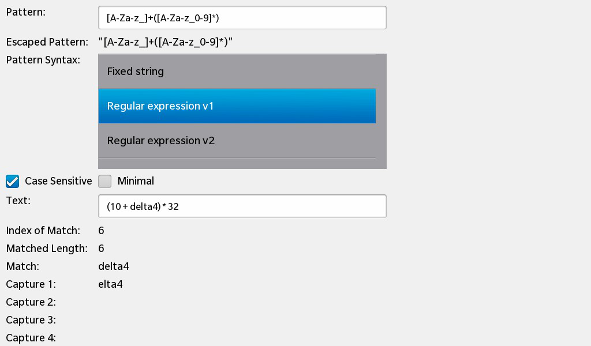
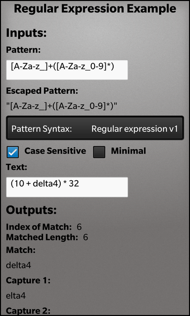

Files:
The Regular Expressions (RegExp) example shows how regular expressions in Qt are applied to text by providing an environment in which new regular expressions can be created and tested on custom text strings.
 
In this example we'll learn how to use the QRegExp class to find substrings inside a text that matches a given pattern (regular expression).
The UI of this sample application consists of two text fields in the 'Inputs' section, where the user can type in the pattern and the text. Additionally there are controls that can be used to configure various properties of the regular expression (e.g. whether the lookup should be case sensitive, which pattern syntax should be used etc.). In the 'Outputs' section there are labels that show at which position the matching substring is located in the text, how long the matching substring is and what the matching substring looks like.
The business logic of the application is encapsulated in the class RegExp, which is exported to the UI as '_regexp'.
// A standard TextField for the regular expression pattern TextField { leftMargin: 10 topMargin: 10 preferredWidth: 500 text: _regexp.pattern onTextChanging: _regexp.pattern = text textStyle { base: tsd.style } }
The 'text' properties of the pattern text field and source text field are bound against the appropriated properties of the RegExp object, and whenever the user changes the text inside the text fields, the properties of RegExp are updated.
// A standard Label Label { // Displays the regular expression pattern input from above TextField text: _regexp.escapedPattern textStyle { base: tsd.style } }
The 'text' properties of the output related labels are also bound against the appropriated properties of the RegExp object, so whenever RegExp changes its result, the labels will be updated automatically.
The RegExp class encapsulates the business logic of this application. It's a thin wrapper around QRegExp that provides properties, so that data can be set and read from within the UI.
All matching substrings (called captures) that the internal QRegExp object finds are stored inside the RegExp class as a list of Capture objects:
struct Capture { bool available; QString text; };
Inside the constructor of RegExp all the member variables are initialized and the 'available' property of all Capture objects is set to 'false' to represent the initial 'pattern is not matching' state.
RegExp::RegExp(QObject *parent) : QObject(parent) , m_pattern("[A-Za-z_]+([A-Za-z_0-9]*)") , m_patternSyntax(QRegExp::RegExp) , m_caseSensitive(true) , m_minimal(false) , m_text("(10 + delta4) * 32") , m_matchIndex(-1) , m_matchLength(-1) { // Initialize the list of captures with 'no captures available' for (int i = 0; i < s_capturesCount; ++i) { Capture capture; capture.available = false; m_captures << capture; } // Start initial processing refresh(); }
The call to refresh() will calculate all matching substrings according to the current configuration of the regular expression.
void RegExp::refresh() { // Create the escaped version of the pattern string ... QString escaped = m_pattern; escaped.replace("\\", "\\\\"); escaped.replace("\"", "\\\""); escaped.prepend("\""); escaped.append("\""); // ... and store it. m_escapedPattern = escaped; // Create a temporary QRegExp object with the current pattern as parameter QRegExp regexp(m_pattern); // Configure the QRegExp object according to the other input parameters regexp.setCaseSensitivity(m_caseSensitive ? Qt::CaseSensitive : Qt::CaseInsensitive); regexp.setMinimal(m_minimal); regexp.setPatternSyntax(m_patternSyntax); // Do the actual pattern matching against the input string (m_text) ... m_matchIndex = regexp.indexIn(m_text); // ... and fill the output parameters with the new values. m_matchLength = regexp.matchedLength(); for (int i = 0; i < s_capturesCount; ++i) { m_captures[i].available = (i <= regexp.captureCount()); m_captures[i].text = regexp.cap(i); } // Notify the UI that the output parameters have changed emit regexpChanged(); }
Inside the refresh() method the first step is to update the escaped version of the pattern and store it in the 'escapedPattern' property. In the second step we create a QRegExp object with the pattern as it has been typed in by the user. Now we configure the QRegExp object according to the properties of the RegExp object. The call to indexIn() does the actual pattern matching against the input text. As a return value we get either '-1' if the text doesn't match the pattern or the offset where the matching substring starts.
The matchedLength() method of the QRegExp class returns the length of the matching substring, that we simply store in the associated property of the RegExp object.
To update the captures, we iterate over all Capture objects in the internal list and update them with the values returned by the cap() method of the QRegExp object.
As last step we emit the regexpChanged() signal to notify the UI that all properties of the RegExp object have been changed.
The setter methods of all input properties of the RegExp object follow always the same scheme:
void RegExp::setText(const QString &text) { if (m_text == text) return; m_text = text; refresh(); emit textChanged(); }
Note: The check whether the new value equals the current value should always be done inside a property setter method, to avoid the unnecessary emission of the changed signal. This improves the performance (since property bindings in the UI won't be reevaluated unnecessarily) and avoids possible update loops.
bool RegExp::capture0Available() const { return m_captures.at(0).available; } QString RegExp::capture0Text() const { return m_captures.at(0).text; }
The getter methods of the properties of the RegExp object simply return the values of the member variables that have been updated inside refresh().